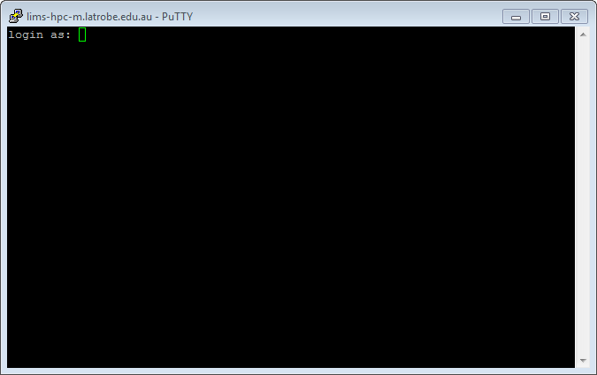

High-Performance Computing
A hands-on-workshop covering High-Performance Computing (HPC).
This workshop assumes you have a basic understanding of the Unix Operating System. If not, then you should take a look at the Hands-on Unix Workshop
Introduction
Before we commence the hands-on part of this workshop we will first give a short 30 minute talk to introduce the High Performance Computing concepts. The slides are available if you would like. Additionally the following reference material is available for later use.
What is an HPC?
An HPC is simply a large collection of server-grade computers working together to solve large problems.
- Big: HPCs typically have lots of CPUs and Memory and consequently large jobs.
- Shared: There are usually lots of users making use of it at one time
- Coordinated: There is a coordinator program to ensure fair-use between its users
- Compute Collection: HPCs use a number of computers at once to solve lots of large jobs

Figure: The user (face at top) interacts with their local PC/Laptop through the keyboard and screen. The PC/Laptop will connect to the Head/Login node of the HPC interactively. The Head/Login node will send the jobs off to the Compute Nodes when one is available.
Why use HPCs?
The main reason we use HPCs is because they are quite big. Given their size, they are usually very expensive, however through sharing the resources the per user/job cost can be kept low.
- Many CPUs: HPCs typically have 100's to 10000's of CPUs. Compare this with the 4 or 8 that your PC/Laptop might have.
- Large Memory: 100's of GBs to multiple TBs of RAM are typical for each node.
- Efficient use: through sharing the resources each user can have access to a very large computer for a period and hand it back for others to use later.
Software Modules
There are typically 100's to 1000's of software packages installed on an HPC. Given that each can have its own special requirements and multiple versions will be made, Software on the HPC will most commonly be packaged and only made available to you when you request it.
- Packaged: to avoid conflicts between software, each is packaged up into a module and only used on demand.
- Loadable: before using a software module you need to load it.
- Versions: given not all users want to use the same version of software (and to compare new results with old you might need the same version) each version is made into its own software module so you have ultimate control.
Job Submission
Job Submission is the process of instructing the HPC to perform a task for you. Depending on the HPC software installed on your HPC, the process of doing so might be different.
- SLURM: this workshop uses an HPC that uses the SLURM HPC software. Some common alternatives (not covered) are PBS or SGE/OGE
- Queues (Partition): when a job is submitted it is added to a work queue; in SLURM this is called a Partition.
- Batch: HPC jobs are not 'interactive'. By this we mean, you can't type input into your job's programs and you won't immediately see the output that your program prints on the screen.
Resources
So that SLURM knows how to schedule and fit jobs around each other, you need to specify what resources your job will use. That is, you need to tell it how many CPUs, RAM, Nodes (servers), and Time you need.
- CPUs: most software is limited using 1 CPU by default but many can use more than one (or you can run multiple copies at once). The number of CPUs you specify needs to match how many things your software can do at once.
- Memory: you need to estimate (or guess) how much memory (RAM) your program needs.
- Nodes: most software will only use one of the HPC's Nodes (i.e. One server) however some software can make use of more than one to solve the problem sooner.
- Time: like when you are scheduling meetings, SLURM needs to know how long each job will take (maximum) so it can organise other jobs afterwards.
Job Types
There are two types of jobs that you can submit:
- Shared: a shared job (as the name suggests) is one that shares a node with other jobs. This is the default and preferred method.
- Exclusive: an exclusive job gets a single (or multiple) nodes to itself. Given this exclusivity, this type of job must know how to use multiple CPUs as most HPCs will have at least 16 CPUs per node.
Connecting to HPC
To begin this workshop you will need to connect to an HPC. Today we will use the BARCOO. The computer called
barcoo.vlsci.unimelb.edu.au is the
one that coordinates all the HPCs tasks.
Server details:
- host: barcoo.vlsci.unimelb.edu.au
- port: 22
- username: trainXX
- password: (provided at workshop)
Connection instructions:
Both Mac OS X and Linux come with a version of ssh (called OpenSSH) that can be used from the command line. To use OpenSSH you must first start a terminal program on your computer. On OS X the standard terminal is called Terminal, and it is installed by default. On Linux there are many popular terminal programs including: xterm, gnome-terminal, konsole (if you aren't sure, then xterm is a good default). When you've started the terminal you should see a command prompt. To log into BARCOO, for example, type this command at the prompt and press return (where the word username is replaced with your BARCOO username):
$ ssh trainXX@barcoo.vlsci.unimelb.edu.au
The same procedure works for any other machine where you have an account except that if your Unix computer uses a port other than 22 you will need to specify the port by adding the option -p PORT with PORT substituted with the port number.
You may be presented with a message along the lines of:
The authenticity of host 'lims-hpc-m.latrobe.edu.au (131.172.36.150)' can't be established.
...
Are you sure you want to continue connecting (yes/no)?
Although you should never ignore a warning, this particular one is nothing to be concerned about; type yes and then press enter. If all goes well you will be asked to enter your password. Assuming you type the correct username and password the system should then display a welcome message, and then present you with a Unix prompt. If you get this far then you are ready to start entering Unix commands and thus begin using the remote computer.
On Microsoft Windows (Vista, 7, 8) we recommend that you use the PuTTY ssh client. PuTTY (putty.exe) can be downloaded from this web page:
http://www.chiark.greenend.org.uk/~sgtatham/putty/download.html
Documentation for using PuTTY is here:
http://www.chiark.greenend.org.uk/~sgtatham/putty/docs.html
When you start PuTTY you should see a window which looks something like this:

To connect to BARCOO you should enter barcoo.vlsci.unimelb.edu.au into the box entitled "Host Name (or IP address)" and 22 in the port, then click on the Open button. All of the settings should remain the same as they were when PuTTY started (which should be the same as they are in the picture above).
In some circumstances you will be presented with a window entitled PuTTY Security Alert. It will say something along the lines of "The server's host key is not cached in the registry". This is nothing to worry about, and you should agree to continue (by clicking on Yes). You usually see this message the first time you try to connect to a particular remote computer.
If all goes well, a terminal window will open, showing a prompt with the text "login as:". An example terminal window is shown below. You should type your BARCOO username and press enter. After entering your username you will be prompted for your password. Assuming you type the correct username and password the system should then display a welcome message, and then present you with a Unix prompt. If you get this far then you are ready to start entering Unix commands and thus begin using the remote computer.

Topic 1: Exploring an HPC
An HPC (short for ‘High Performance Computer’) is simply a collection of Server Grade computers that work together to solve large problems.
Figure: Overview of the computers involved when using an HPC. Computer systems are shown in rectangles and arrows represent interactions.
Exercises
When you login, you will be presented with a message; this is called the Message Of The Day and usually includes lots of useful information. On BARCOO this includes a list of useful commands, the last login details for your account and the contact email of the system administrator
Depending on which computer you are working:
- SNOWY & BARCOO: help@vlsci.unimelb.edu.au
- LIMS-HPC: genomics@latrobe.edu.au
The barcoo[2-4] is shorthand for barcoo2 barcoo3 and barcoo4 and barcoo[1,5] is shorthand for barcoo1 and barcoo5
Have a look at the NODELIST column. Only count each node once.
$ sinfo
PARTITION AVAIL TIMELIMIT NODES STATE NODELIST
compute* up 200-00:00: 3 mix lims-hpc-[2-4]
compute* up 200-00:00: 2 idle lims-hpc-[1,5]
bigmem up 200-00:00: 1 idle lims-hpc-1
8hour up 08:00:00 3 mix lims-hpc-[2-4]
8hour up 08:00:00 3 idle lims-hpc-[1,5],lims-hpc-m
NOTE: the above list will vary depending on the HPC setup.
The sinfo command lists all available partitions and the status of each node within them. If you count up the names of nodes (uniquely) you will get the total nodes in this cluster.
- BARCOO: 70 (barcoo001 through barcoo070)
- SNOWY: 43 (snowy001 through snowy043)
- LIMS-HPC: 6 (lims-hpc-m and lims-hpc-1 through lims-hpc-5)
An automatic (though more complex) way would have been running the following command:
$ scontrol show node | grep NodeName | wc -l
Where:
- scontrol show node: lists details of all nodes (over multiple lines)
- grep NodeName: only shows the NodeName line
- wc -l: counts the number of lines
Topic 2: Software Modules
Up to this point we have been using only standard Unix software packages which are included with Linux/Unix computers. Large computing systems such as HPCs often use a system of modules to load specific software packages (and versions) when needed for the user.
In this topic we will discover what science software modules (tools) are available and load them ready for analysis.
This topic uses the man and module commands heavily
Exercises
Literally type module and press ENTER key.
Answer: It prints an error followed by a list of available options / flags
$ module
cmdModule.c(166):ERROR:11: Usage is 'module command [arguments ...] '
Modules Release 3.2.10 2012-12-21 (Copyright GNU GPL v2 1991):
Usage: module [ switches ] [ subcommand ] [subcommand-args ]
Switches:
-H|--help this usage info
-V|--version modules version & configuration options
-f|--force force active dependency resolution
-t|--terse terse format avail and list format
-l|--long long format avail and list format
-h|--human readable format avail and list format
-v|--verbose enable verbose messages
-s|--silent disable verbose messages
-c|--create create caches for avail and apropos
-i|--icase case insensitive
-u|--userlvl <lvl> set user level to (nov[ice],exp[ert],adv[anced])
Available SubCommands and Args:
+ add|load modulefile [modulefile ...]
+ rm|unload modulefile [modulefile ...]
+ switch|swap [modulefile1] modulefile2
+ display|show modulefile [modulefile ...]
+ avail [modulefile [modulefile ...]]
+ use [-a|--append] dir [dir ...]
+ unuse dir [dir ...]
+ update
+ refresh
+ purge
+ list
+ clear
+ help [modulefile [modulefile ...]]
+ whatis [modulefile [modulefile ...]]
+ apropos|keyword string
+ initadd modulefile [modulefile ...]
+ initprepend modulefile [modulefile ...]
+ initrm modulefile [modulefile ...]
+ initswitch modulefile1 modulefile2
+ initlist
+ initclear
The module command is used to show details of software modules (tools).
Answer:
$ module avail
------------------- /usr/share/Modules/modulefiles --------------------
dot module-git module-info modules null use.own
------------------- /usr/local/Modules/modulefiles --------------------
acana/1.60 mafft-gcc/7.215
aftrrad/4.1.20150201 malt/0.1.0
arlequin/3.5.1.3 matplotlib-gcc/1.3.1
...
The modules list has been shortened because it is very long. The modules after the /usr/local/Modules/modulefiles line are the science software; before this are a few built-in ones that you can ignore.
Run the command man module
Use a search to find out about the avail subcommand (e.g. /avail<enter>). You may have to press 'n' a few times to reach the section where the it describes the avail subcommand.
If an argument is given, then each directory in the MODULEPATH is searched for modulefiles whose pathname match the argument
This is a quote from the manual page for the module command explaining the avail subcommand. It uses rather technical language but basically it's saying you can put search terms after the avail subcommand when entering the command.
The man page told us that we could put a search term after module avail.
$ module avail f
------------------- /usr/local/Modules/modulefiles -------------------
fasta-gcc/35.4.12 flex-gcc/2.5.39
fastqc/0.10.1 fontconfig-gcc/2.11.93
fastStructure-gcc/2013.11.07 freebayes-gcc/20140603
fastStructure-gcc/20150320 freetype-gcc/2.5.3
fastx_toolkit-gcc/0.0.14
Answer: 26 modules
NOTE: this was correct at time of writing this workshop and might increase over time so don't be alarmed if you got more
To get a fully automated solution your could do the following command:
$ module -l avail 2>&1 | grep "^f" | wc -l
Where:
- module -l avail: lists all modules (in long format, i.e. one per line)
- 2>&1: merges output from standard error to the standard output so it can be feed into grep. For some reason the developers of the module command thought it was a good idea to output the module names on the error stream rather than the logical output stream.
- grep "^f": only shows lines beginning with f
- wc -l: counts the number of lines
This question is very literal
$ pear
-bash: pear: command not found
The error you see is from BASH, it is complaining that it doesn't know anything about a command called 'pear'
Answer: No, command not found
$ module load pear-gcc/0.9.4
The paper citation gives a clue.
$ module load pear-gcc/0.9.4
[15:59:19] training21@lims-hpc-m ~ $ pear
____ _____ _ ____
| _ \| ____| / \ | _ \
| |_) | _| / _ \ | |_) |
| __/| |___ / ___ \| _ <
|_| |_____/_/ \_\_| \_\
PEAR v0.9.4 [August 8, 2014] - [+bzlib]
Citation - PEAR: a fast and accurate Illumina Paired-End reAd mergeR
Zhang et al (2014) Bioinformatics 30(5): 614-620 | doi:10.1093/bioinformatics/btt593
... REST REMOVED ...
Answer: "PEAR: a fast and accurate Illumina Paired-End reAd mergeR" (i.e. merges paired dna reads into a single read when they overlap)
Use man to find a subcommand that will list currently loaded modules.
We are not really expecting you to be able to answer the 2nd question however if you do get it correct then well-done, that was very tough.
List all the loaded modules. How many are there?
$ module list
Currently Loaded Modulefiles:
1) gmp/5.1.3 3) mpc/1.0.2 5) bzip2-gcc/1.0.6
2) mpfr/3.1.2 4) gcc/4.8.2 6) pear-gcc/0.9.4
Answer: 6
Where did all the others come from?
You may have noticed when we loaded pear-gcc the module called gcc was also loaded; this gives a hint as to where the others come from.
Answer: They are dependencies; that is, they are supporting software that is used by the module we loaded. Additionally, some HPC's automatically load some modules for you when you login.
Computer Scientists are not always inventive with naming commands, try something starting with un
How do you undo the loading of the pear module?
$ module unload pear-gcc
Answer: the unload sub-command removes the named module from our current SSH session.
List the loaded modules again, did they all disapear?
Answer: Unfortunately not, the module command is not smart enough to determine if any of the other modules that were loaded are still needed or not so we will need to do it manually (or see next question)
$ module purge
Answer: running the purge sub-command will unload all modules you loaded (and all dependencies).
Alternative: if you close your SSH connection and re-open it the new session will be blank as well.
Topic 3: Job Submission
Up to this point in the workshop (and the previous Unix workshop) we have only used the head-node of the HPC. While this is ok for small jobs it's unworkable for most jobs. In this topic we will start to learn how to make use of the rest of the HPCs immense compute power
Background
On conventional Unix computers (such as the HPC headnode) we enter the commands we want to run at the terminal and see the results directly output in front of us. On an HPC this type of computation will only make use of one node, namely, the Head Node. To make use of the remaining (compute) nodes we need to use the SLURM software package (called an HPC Scheduler). The purpose of SLURM is to manage all user jobs and distribute the available resources (i.e. time on the compute nodes) to each job in a fair manner. You can think of the SLURM software as like an electronic calendar and the user jobs like meetings. Users say to SLURM "I want XX CPUS for YY hours" and SLURM will look at its current bookings and find the next available time it can fit the job.
Terminology:
- Node: a server grade computer which is part of an HPC
- Batch Job: a group of one or more related Unix commands that need to be run (executed) for a user. e.g. run fastqc on all my samples
- Partition (or Queue): a list of jobs that need to be run. There is often more than one partition on an HPC which usually have specific requirements for the jobs that can be added to them. e.g. 8hour will accept jobs less than or equal to 8hours long
- Runtime: the amount of time a job is expected (or actually) runs
- Resources: computation resources that can be given to our jobs in order to run them. e.g. CPU Cores, Memory, and Time.
- Job Script: a special BASH script that SLURM uses to run a job on our behalf once resources become available. Job scripts contain details of the resources that our commands need to run.
- Output (or Results) file: When SLURM runs our batch job it will save the results that would normally be output on the terminal (screen) to a file; this file is called the output file.
- Reservation: much like a reservation for a resturant holds a table for you, the administrator can give you an HPC reservation which holds various resources for a period of time exclusively for you.
Exercises
Useful Commands: man, sinfo, cat, sbatch, squeue, cp, module, prime
Try the sinfo command
Have a look at the PARTITION and NODELIST columns. The barcoo[2-4] is shorthand for barcoo2 barcoo3 and barcoo4
$ sinfo
PARTITION AVAIL TIMELIMIT NODES STATE NODELIST
compute* up 200-00:00: 3 mix lims-hpc-[2-4]
compute* up 200-00:00: 2 idle lims-hpc-[1,5]
bigmem up 200-00:00: 1 idle lims-hpc-1
8hour up 08:00:00 3 mix lims-hpc-[2-4]
8hour up 08:00:00 3 idle lims-hpc-[1,5],lims-hpc-m
Note: the output to the sinfo command will look different depending on which HPC you are using and it's current usage levels
The sinfo command will list the partitions. It summaries the nodes by their current status so there may be more than one line with main in the partition column. It lists the nodes in shorthand i.e. barcoo[1,3-5] means barcoo1, barcoo3, barcoo4, barcoo5.
Answer: barcoo001, barcoo002, ..., barcoo070
Question 3.2 not possible on BARCOO, skipping it today
Use the cat command to view the contents of task01, task02 and task03 job script
Lookup the man page for sbatch command. sbatch's options match up with the #SBATCH comments at the top of each job script. Some will be affected by more than one option
Non-exclusive (shared) jobs:
It is --cpus-per-task x --ntasks but if --ntasks is not present it defaults to 1 so its --cpus-per-task x 1
Exclusive jobs:
The --nodes options tells us how many nodes we ask for and the --exclusive option says give us all it has. This one is a bit tricky as we don't really know until it runs.
Answer:
- task01: 1 cpu core
- task02: 6 cpu cores
- task03: at least 1 as this has requested all cpu cores on the node its running on (--exclusive).
However, since we know that all nodes on BARCOO have 16, we know it will get 16.
Lookup the man page for sbatch command. sbatch's options match up with the #SBATCH comments at the top of each job script. Some will be affected by more than one option
The --mem-per-cpu OR --mem options are holding the answer to total memory.
For task01 and task02 the calculation is --mem-per-cpu x --cpus-per-task x --ntasks
For task03, like with the cpus cores question, we get all the memory available on the node we get allocated
The --mem-per-cpu OR --mem options are holding the answer to total memory.
For task01 and task02 the calculation is --mem-per-cpu x --ntasks x --cpus-per-task
For task03, like with the cpus cores question, we get all the memory available on the node we get allocated
Answer:
- task01: 1024MB (1GB) i.e. 1024 x 1 x 1
- task02: 12288MB (12GB) i.e. 2048 x 3 x 2
- task03: at least 1024MB (1GB). The actual amount could be a lot more as most HPCs have 100GB+ per node
Use the man sbatch command to look up the time specification. If you search for --time it will describe the formats it uses (i.e. type /--time and press enter)
The --time option is what tells slurm how long your job will run for.
Answer:
- task01: requests 30:00 (30mins 0secs), uses ~30secs
- task02: requests 5:00 (5mins 0secs), uses ~5secs
- task03: requests 1:00 (1min 0secs), uses ~30secs
Use the man sbatch command to look up the time specification. If you search for --time it will describe the formats it uses (i.e. type /--time and press enter)
This is a maximum time. Your job may finish early, at which point it hands back the resources for the next job. However if it tries to run longer the HPC will terminate the job.
- 1h30m:--time=
- 1m20s:--time=
- 1.5days:--time=
- 30m:--time=
Use the man sbatch command to look up the time specification. If you search for --time it will describe the formats it uses (i.e. type /--time and press enter)
- 1h30m:--time=01:30:00 (alternatively: 0-01:30)
- 1m20s:--time=01:20
- 1.5days:--time=1-12
- 30m:--time=30
- --time=12-00:20
- --time=45
- --time=00:30
Use the man sbatch command to look up the time specification. If you search for --time it will describe the formats it uses (i.e. type /--time and press enter)
- --time=12-00:2012 days and 20 minutes
- --time=4545 minutes
- --time=00:3030 seconds
Reservations
Before we continue, a quick note on reservations. Reservations are not normally needed however sometimes we will, particularly when the HPC is busy. To make use of a reservation you need to know its name and provide it with the --reservation option
Today we use the TRAINING reservation so that we have resources available to run our jobs. Your jobs will need to contain the line:
#SBATCH --reservation=TRAINING
Now use sbatch to submit the task01 job:
Use the man page for the sbatch command. The Synopsis at the top will give you an idea how to run it.
$ sbatch task01
Submitted batch job 9998
Answer: it's unique for each job; in the above example mine was 9998
The squeue command shows you the currently running jobs. If it's been longer than 30 seconds since you submitted it you might have to resubmit it.
Use the squeue command to show all jobs. Search for your jobid and look in the NODELIST column.
$ sbatch task01
Submitted batch job 9999
$ squeue -u training01
JOBID PARTITION NAME USER ST TIME NODES NODELIST(REASON)
9999 compute task01 training R 0:05 1 lims-hpc-2
Answer: it's dependent on node availability at time; in the above example mine was lims-hpc-2
Advanced
You can find the prime command in the training-gcc/1.0 module
The key points to change in the task01 script are:
- adding the module load training-gcc/1.0
- replacing the sleep (and echo) statements with a call to prime 20.
#!/bin/bash
#SBATCH --cpus-per-task=1
#SBATCH --mem-per-cpu=1024
#SBATCH --partition=PARTITION
#SBATCH --time=30:00
#SBATCH --reservation=RESERVATION
module load training-gcc/1.0
echo "Starting at: $(date)"
prime 20
echo "Finished at: $(date)"
Where RESERVATION is replaced with TRAINING and PARTITION is replaced with main
The output from the program will provide the results that we are after. For HPC jobs this will be placed in the SLURM output file; this is called slurm-JOBID.out where JOBID is replaced by the actual job id.
You should get results similar to below however the actual numbers will vary as amount of computations performed will be affected by the amount of other jobs running on the HPC
$ sbatch prime_numbers
Submitted batch job 9304
$ cat slurm-9304.out
Starting at: Fri May 8 16:11:07 AEST 2015
Primes: 710119
Last trial: 10733927
Largest prime: 10733873
Runtime: 20 seconds
Finished at: Fri May 8 16:11:27 AEST 2015
- Did it start immediately or have some delay?
- How long did it actually run for?
#!/bin/bash
#SBATCH --cpus-per-task=1
#SBATCH --mem-per-cpu=1024
#SBATCH --partition=TRAINING
#SBATCH --time=30:00
#SBATCH --reservation=RESERVATION
#SBATCH --mail-user=name@email.address
#SBATCH --mail-type=ALL
module load training/1.0
echo "Starting at: $(date)"
prime 20
echo "Finished at: $(date)"
Where RESERVATION is replaced with TRAINING and PARTITION is replaced with main
Answers:
- Did it start immediately or have some delay? The Queued time value in the subject of start email will tell you how long it waited.
- How long did it actually run for? The Run time value in the subject of the end email will tell you how long it ran for which should be ~20 seconds.
Topic 4: Job Monitoring
It is often difficult to predict how a software tool may utilise HPC System Resources (CPU/Memory) as it can vary quite widely based on a number of factors (data set, number of CPU's, processing step etc.).
In this topic we will cover some of the tools that are available that enable you to watch what is happening so we can make better predictions in the future.
Exercises
When all else fails, try man; specifically, the description section
$ man top
...
DESCRIPTION
The top program provides a dynamic real-time view of a running system.
...
Answer: in lay-person terms "Continually updating CPU and Memory usage"
Run the top command. Above the black line it shows some system-wide statistics and below are statistics specific to a single process (a.k.a, tasks OR software applications).
This would be a system-wide statistic.
Answer: If you look at the first value on the Mem line (line 4) it will tell you the total memory on this computer (node).
- BARCOO: 65942760k or ~64 GigaBytes
- SNOWY: 132035040k or ~128 GigaBytes
- LIMS-HPC: 132085396k or ~128 GigaBytes
To transfer from kB to MB you divide by 1024 and MB to GB by 1024 again.
Answer: If you subtract the %id value (4th value on Cpu(s) line) from 100% you will get the total CPU Usage
It's not PID but from time to time it might be ordered sequentially.
Answer: %CPU which gives you an indication of how much CPU time each process uses and sorted high-to-low.
Add up the top few CPU usages of processes and compare this to the system-wide CPU usage at that time. NOTE: you may need to quit top (by pressing q) so you can compare before it updates.
It might have something to do with the total number of CPU Cores on the system.
Answer: %CPU column gives you an indication of how much this process uses of 1 CPU Core, where as the system-wide values at the top are exactly that, how much the entire system is utilised. i.e. if you could see all processes in top (excluding round errors) they would add up 100% x the number of cpu cores available; on LIMS-HPC this would be 0-1600% in the individual processes and 0-100% on the system-wide section. BARCOO it is 0-2400% and SNOWY it is 0-3200% for individual processes.
Can you think of a reason that this might be useful?
Answer: top -m will cause top to sort the processes by memory usage.
Can you think of a reason that this might be useful?
Your program might be using a lot of memory and you want to know how much; by sorting by memory will cause your program to stay at the top.
What does it do?
It changes the COMMAND column (right most) to show the complete command (or as much that fits) including the flags and options.
How might this be helpful?
Sometimes you might be running a lot of commands with the same name that only differ by the command-line options. In this case it is hard
to tell which ones are still running unless you use the -c flag to show the complete command.
NOTE:
If top is running you can press the c key to toggle show/hide complete command
How can you get top to only show your processes?
Answer 1: top -u YOURUSERNAME
Answer 2: while running top press the u key, type YOURUSERNAME and press
Why might this be useful?
When you are looking to see how much CPU or Memory you are using on a node that has other user jobs running it can be hard
to quickly identify yours.
Topic 5: All Together
This topic will allow you to put all the skills that you learnt in this workshop to the test. You might need to refer back to the earlier topics if you have forgotten how to do these tasks.
Overview:
- Write jobscript
- Load/use software module
- Submit job
- Monitor job
Task 1: Write a job script
Write a job script that requests the following resources:
- Filename: monINITIALS.slurm
- where INITIALS is replaced with your initials. e.g. for me it would be monAR.slurm
- Tasks: 1
- CPUs: 1
- Partition: main
- Time: 5 mins
- Memory: 1 GB (remember to specify it in MB)
- Reservation: TRAINING
Task 2: Load/use software module
Edit your job script so that it:
- Loads the training-gcc/1.0 module
- Runs the fakejob command with your name as the first parameter.
- FYI: fakejob is a command that was made to demonstrate what real commands might do in terms of CPU and Memory usage. It does not perform any useful task; if you must know, it just calculates prime numbers for 5 minutes and consumes some memory
Task 3: Submit job
- Use sbatch to submit the job to the HPC.
- Note down the job id it was given (for later).
- Use squeue (or qs) to check that is started ok.
- When it starts check which compute node it is running on (for the next task).
Task 4: Monitor the job
Use the top command to check how much CPU and Memory the job is using. Given that SLURM is running the job on your behalf on one of the compute nodes, top won't be able to see the job. To be able to use top, you will first need to login to the compute node that is running your job.
To login:
$ ssh barcooXXX
Where XXX is the actual node number you were allocated (See task 3.4).
You are now connected from your computer to barcoo which is connected to barcooXXX.
+---------------+ +------------+ +------------+
| YOUR COMPUTER | -- SSH --> | BARCOO | -- SSH --> | BARCOOXXX |
+---------------+ +------------+ +------------+
You can tell which node you are on by the text in the prompt
[USERNAME@barcoo USERNAME]$
Changes to:
[USERNAME@barcooXXX USERNAME]$
Once logged in to the relevent compute node you can run top to view your job. Remember the u and c options we learnt earlier; they will be helpful here when everyone is running the same jobs.
It should vary (within the limits you set in the job script)
The fakejob program should vary its CPU usage between 50 and 100% CPU and 500 and 1000MB of memory. The percentage that it shows is based on the total memory of the node that runs your job; check Topic 4, Question 4.2 to remember how to find the total memory.
Finished
Well done, you learnt a lot over the last 5 topics and you should be proud of your achievement; it was a lot to take in.
From here you should be confortable to begin submitting real jobs to the HPC (in your real account, not the training one).
You will no-doubt forget a lot of what you learnt here so I encourage you to save a link to this Workshop for later reference.
Thank you for your attendance, please don't forget to complete the VLSCI training survey and give it back to the Workshop facilitators.